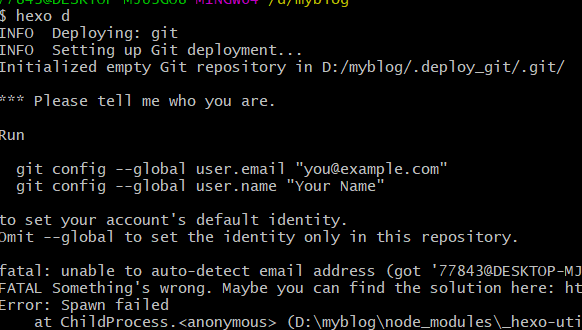

首先搭建本地环境
这个是根据这个博主的文章改的，弄两天，无数错误，看了太多的教程才搞完
安装 git 、Node 默认安装
安装完成后 查看是否成功
1 | node -v |
1 | npm -v |

改nmp的源
然后将 nmp 的原改道 淘宝的源（官方源比较慢，特慢）
修改
1 | npm config set registry http://registry.npm.taobao.org/ |
还原
1 | npm config set registry https://registry.npmjs.org |
安装hexo-cli：进入终端，键入命令
cnpm i hexo-cli -g
其中 ‘cnpm’ 代替 npm，安装速度更快； ‘i’ 表示install， ‘-g’表示全局安装 (注意：如果安装失败，建议在管理者模式下安装)]
初始化：在本地合适的位置创建一个文件夹用作Blog环境，比如，我这里在D盘根目录下创建了一个myblog文件夹，进入此目录，击鼠标右键打开gitbash终端，键入命令
1 | hexo init |
进行初始化，进度可能很慢[蹲个厕所回来大概就OK了]，耐心等待安装即可。出现下图表示安装成功
完毕后发现空目录多出很多文件，如下图： 这里的node_modules是项目依赖，在初始化的时候已经下载下来了，不用再
这里的node_modules是项目依赖，在初始化的时候已经下载下来了，不用再 hexo i 了(有的教程写的hexo i 就是安装依赖的作用)。
测试本地运行
上述环境完成后，我们就可以在本地预览blog了。很简单，两行命令。
- 键入命令
hexo generate生成静态文件，可以简写为hexo g - 键入命令
hexo server在本地运行， 可以简写为hexo s
出现下图则表示成功

- 打开浏览器，地址栏键入
http://localhost:4000即可进行预览，效果如下
部署到GitHub
添加ssh
创建一个 SSH key 。在命令行（即Git Bash）输入以下命令， 回车三下即可：
1
$ ssh-keygen -t rsa -C "邮箱地址"
添加到 github。 复制密钥文件内容（路径形如
C:\Users\Administrator\.ssh\id_rsa.pub），粘贴到[New SSH Key]https://xxxx.github.com/settings/keys即可。测试是否添加成功。在命令行（即Git Bash）依次输入以下命令，返回
“You’ve successfully authenticated”即成功：1
2$ ssh -T git@github.com
$ yes
在github上创建一个仓库注意此仓库的名称格式是： 你的github用户名.github.io (其中用户名不区分大小写) 如下图 一定要如图操作

修改hexo文件配置
要想部署到github，需要对本地myblog文件夹下的
_config.yml文件进行配置 如图
用你的编译器打开该文件，拉到最后，找到
deploy选项，作如下配置:1
2
3
4deploy:
type: git
repo: git@github.com:RoseSnow/RoseSnow.github.io.git
baranch: master` repo` 填写你刚刚github创建的仓库的地址，点进你的仓库 选择 SSH 地址

部署
部署之前，需要安装 git部署插件
打开myblog文件夹，调出
'gitbash‘终端，键入cnpm i hexo-deployer-git -S安装插件安装完毕后，键入命令
hexo g生成静态文件键入命令
hexo d找到此文件夹在 config 中添加

[user]
1 | email =123456789@qq.com |
再次
1
hexo d
像这样就行

再进入到github，进入io仓库，点击setting 进入设置，往下拉至 GitHub Pages 看到如图( 这是我解析到我的域名了 ) 正常应该是 您的网站发布于sleepywater/sleepywater.github.io

然后输入 你的GitHub名.github.io 就能访问
文章发表：https://blog.csdn.net/damienzhong/article/details/84335510
参考
美化等一系列优化：
- https://www.simon96.online/2018/10/12/hexo-tutorial/
- http://shenzekun.cn/hexo%E7%9A%84next%E4%B8%BB%E9%A2%98%E4%B8%AA%E6%80%A7%E5%8C%96%E9%85%8D%E7%BD%AE%E6%95%99%E7%A8%8B.html
去掉网站末尾的 印记：https://www.jianshu.com/p/4fbc57269f1b